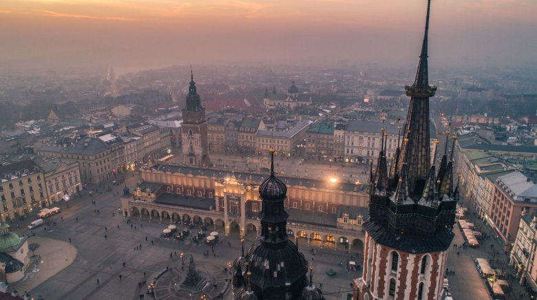
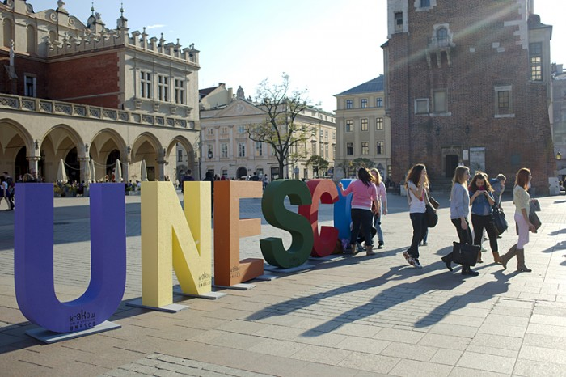

HOME | SERVICES | VIDEO | WORLD | UK | BUSINESS | TECH | SCIENCE | MAGAZINE | WORLD NEWS TV
Sensation!!!!
Strange Things Happen in Kraków
Krakow, meеts superman girl
 UNESCO named Krakow the City of Literature in 2013, a well-earned designation. Poland's second-largest metropolis was home to three Nobel-winning writers—Czeslaw Milosz, Wislawa Szymborska, and Ivo Andric – Conde Nast Traveler explains. The first place in the rating was awarded to Florence. Italy.

Well...
What do you think about 2017?
Wow!
What a fun year it’s been for the news biz.
In the heart of Krakow, we met a very strange girl, like a superman girl.
Do you remember that fictional character appearing in American comic books?
Everybody knows her.
She said, that she losed her SuperMan.
1
2
3
4
5